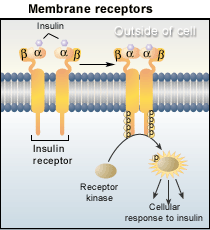

The Biology Project > Cell Biology > Cell Signaling > Problem Set
Cell Signaling Problem Set
Problem 1: Receptors
Tutorial to help you answer the question
A protein receptor binds a hormone outside the cell membrane and activates a protein kinase inside the cell. Is the receptor a peripheral or integral membrane protein?
A. Membrane receptors are peripheral, or associated with the surface of the bilayer. Association with a hormone results in the release of a lipid signal that activates protein kinases.
B. Membrane receptors associated with signaling are all integral membrane proteins that can transmit signals through the lipid bilayer.
Tutorial
Membrane receptors
| Membrane receptors generally function by binding the signal, or ligand and causing the production of a second signal (second messenger) that causes a cellular response. The diagram shows how the receptor for insulin functions. | |
A pair of insulin molecules bind to receptors, causing a change in the protein structure that exposes a kinase or phosphate transferring enzyme inside the cell. The activated receptor kinase transfers a phosphate group to adjacent receptor molecules, leading to the activation of subcellular proteins and a cellular response to insulin. The receptors must be integral membrane proteins that pass through the lipid bilayer. Through this system, an insulin molecule can cause a response inside the cell without passing through the lipid bilayer. |
 |
The Biology Project > Cell Biology > Cell Signaling > Problem Set
University of Arizona
May 2002
Revised: August 2004
Contact the Development Team
http://biology.arizona.edu
All contents copyright © 2002-04. All rights reserved.